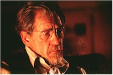
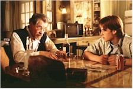

Contents | Features | Reviews | News | Archives | Store |
 |
|
| Movie Credits | Buy It! |
Apt Pupil
Review by Carrie Gorringe
Posted 30 October 1998
| Directed by Bryan Singer Starring
Ian McKellen, Brad Renfro, Bruce Davison, Screenplay by Brandon Boyce, based on the novella |
A gifted sixteen-year-old named Todd Bowden (Renfro) has just finished studying the Holocaust in history class at the same time he makes a discomfiting discovery: one of his neighbors, the elderly Arthur Denker (McKellen) is actually Kurt Dussander, a Nazi war criminal. Todd, however, does not wish to turn Dussander in to the authorities. His concept of justice is more bizarre and self-serving: in exchange for his silence, Todd wants Dussander to tell all about the evil deeds he committed during his tenure at a concentration camp. Becoming obsessed with Dussander’s stories, Todd’s academic performance begins to slip and he then must call upon the old Nazi for assistance. By doing so, Todd finds the balance of power in this always uneven relationship shifting from his grasp, forcing him to experience, in a fortunately limited fashion, how horrible it must have been to be under Dussander’s unbridled authority. The pseudonym under which Dussander has lived for years is appropriate, in a very sinister way: he is a true "thinker" who has snared the unsuspecting Todd, by seemingly imperceptible degrees, in a maelstrom of mutual blackmail involving, among other guilty secrets, murder. Early in the film (and novella), Dussander sneers at the blind optimism he perceives in Todd -- a quintessentially American personality trait, says the grizzled (but, as is soon indicated, unbowed) ex-camp leader. Todd does learn many things from Dussander, many more than even he had intended, for his relationship with the Nazi becomes more than a case of the unwilling being led by the unworthy; in a most insidious fashion, their mutual knowledge links them so closely that they become brothers under the skin, so to speak, (in a perverse psychological compact that Nazi historian Richard Breitman described, with succinct aptness, as "blood cement"). How does someone break free from this sort of nasty symbiosis?
Hard on the heels of that question is another: How to assess this film? Well, Apt Pupil, like all texts that deal with the controversies of the Nazi Holocaust, automatically dwells in the land of the unclassifiable to some extent. You can’t, and wouldn’t, want to call it "entertainment," because the film, while compelling in the way that anything recounting dreadful actions tend to be, cannot be defined as such; this will not serve in any way as a distraction. After reading various accounts of the Holocaust, someone must always come to the same dismal conclusion: there is no comfort to be had; every time someone attempts to draw a comfort zone around how far the Nazis would go in torturing and murdering (saying to him or herself, almost as an invocation, "At least they didn’t do this." -- "this" representing the worst possible activity imaginable), he or she only has to turn the next page to see their nightmares writ large and, occasionally, in dreadful color. To this end, it is obvious from reading King’s novella that he was determined to have it serve as an object lesson in the (presumably) well-worn premise that those who believe they are the least prone to corruption are probably the most vulnerable, and Singer sets his own no-nonsense interpretation of events from the first frames; the opening credits, with their successive impositions of Nazi war criminals and atrocities upon each other, are the audience’s first hints that they are about to enter a world of extreme provocation, where neither rules nor assumptions abide with any certainty.
Columbia’s timing of Apt Pupil’s release, one week shy of Hallowe’en, is, well, particularly apt, for the Nazi Holocaust is the most sinister horror tale of the twentieth century. Its motifs appear to have been hijacked whole cloth from conventional horror stories and films: terror, sudden and arbitrary death, and, most terrible of all, mad scientists running amok, committing perverse and immoral experiments upon the unwilling in the name of ideology and personal ambition. The unrelenting evil depicted therein has become, for better or for worse, the master narrative for human depravity; every inhumane action by a government is qualified or quantified against the behavior of the Nazis, openly or covertly, as a guidepost for determining how "bad" the action has been. For something that has been deemed to be utterly "unspeakable," never has so much ink, film and tape been utilized to speak about it, the disgusting details being well known to anyone with sufficient access to cable television (not for nothing was the A&E channel once described by wags as "the Hitler channel," and its younger sibling, the History Channel, is now in contention for inheriting the title). The use of the term "disgusting" to describe the is most appropriate, though not for the reasons that readily come to mind; viewing the Nazi depredations with disgust reveals more about our own response to them, and our own wishful thinking, than it demonstrates any accurate measure of monstrosity. Warren Miller, in his most insightful work, The Anatomy of Disgust, characterizes the state of being disgusted as one which implies a moral remove, a moral supremacy, if you like, from the commission of said acts. It can be a form of wallowing in our own smugness that also serves to keep people talking in circles about indigenous causes of genocide -- a tactic which conveniently distracts from the embarrassing specter of its reoccurrence (most lately in Rwanda) and our continuing indifference to it (not to mention the really inconvenient role that human nature just might play in its instigation). This latter sore point is the one into which Apt Pupil throws a truckload of salt and then employs a pad of extra-coarse steel wool with a glee that is unholy. Boyce and Singer wisely excerpted the title of their film from the original: by removing the individuality of Todd’s experience (one boy’s "summer of corruption"), the filmmakers illustrate the ease with which malevolence can overpower anyone under the wrong set of circumstances; those who believe that they can control evil through their "superior" moral stance and a sunny optimism are the most vulnerable.
Admittedly, in the process of explicating this point, the filmmakers are guilty of a certain degree of moral streamlining in Todd’s character (in King’s novella, the teenager is well on his way to a life of crime long before Dussander’s hooks have sunk in too deeply). Also, and paradoxically, in emphasizing the obvious, the filmmakers have run the risk of reducing Todd’s dilemma to the level of caricature. Yet, as stated above, with all of the talk and very little revelation surrounding discussions of the Holocaust, one has to ask just how "obvious" this conclusion really is. If someone were inclined to do so, he or she could rightly accuse the filmmakers of indulging in melodrama in the name of exploiting the Holocaust, an episode overflowing with the most monstrous aspects of human turpitude; Such an accusation would be true, to some extent; Singer and Boyce do have a tendency to favor the more outrageous approach of King’s already outrageous novella (in the latter case, consider a mediocre ending ripped straight from Raoul Walsh’s White Heat, complete with personal apocalypse but minus James Cagney and his "Top o’ the world" speech). For example, there’s one scene in which Todd, while under the gym shower, imagines you-can-guess-what, and the transparency of the setup is somewhat inexcusable, good intentions be damned, given that it comes from a director who could keep the equally transparent ruse of Kayser Soze under wraps until the final frames of The Usual Suspects. To be honest, Singer’s outrage over the prospect of an unrepentant Nazi living snugly in the midst of suburbia overwhelms the film at times, but this criticism is not delivered with a we’ve-seen-it-all-before tone of dismissal. Rather, it’s just a reminder how easy it is for someone to fall into the trap of reacting, rather than responding after careful consideration, to the avalanche of sadistic concepts and images that is the Nazi Holocaust. After all, it must be remembered that the very extreme nature of the brutality enacted therein can be so psychologically overwhelming as to push the experiences into the land of the surreal, if only as a defense mechanism. The filmmakers have an uneasy line to walk, and tend toward a balance that many of us could not match.
Fortunately, when imbalance threatens, the lead actors are able to keep the film and its message in perspective, allowing the full effect of it to progress between the two of them with terrifying thoroughness (and, for all of the fine work presented by Davison -- as Todd’s emotionally somnambulant father -- Schwimmer, et al., Apt Pupil really is a cruel two-person comedy of errors). Renfro gracefully handles the necessary psychological transitions that Todd undergoes, from naïvely bullying to genuinely heart-stoppingly mean. Renfro’s final scene involving Todd and the hapless guidance counselor, Mr. French (Schwimmer -- yes, Schwimmer, from Friends, in a clean, restrained performance), is emotionally excoriating. Todd, now thoroughly enlightened as to what it takes to maintain silence in the midst of culpability, gives French a lesson in sociopathy that is both inevitable and unforgettable. Renfro can call this performance his own equivalent of a coming-out party, because he has delivered a portrayal of thought-provoking strength replete with all of the necessary nuances to prevent the role from appearing one-dimensional (he fulfills much of the promise that was on display in The Client). As deftly rendered by acting veteran McKellen, the character of Dussander is filled with unrepentant malevolence and acts as a rebuke to those who would equate old age with a lessening of cruel impulses. It might be said that McKellen is borrowing somewhat too liberally from his earlier work as the updated Moselyesque Richard III; however, in the former case, McKellen’s task was to represent the mindset of those at the top of the Fascist hierarchy. Even as the head of a concentration camp, Dussander was one of the lower-level standard bearers -- one of those who "merely" followed orders and dished them out, not reluctantly, but, as the audience comes to understand, with a willingness bordering upon joy. McKellen’s task here is to delicately peel back the mental layers of this inhumane man and to disseminate the essence of evil ever so slowly. "You play with fire, boy," he barks threateningly at Todd early in their relationship, and Todd will learn the truth behind the cliché.
Nevertheless, this approach to characterization is not without difficulties, because the role of Dussander, whether in film script or original source, lacks background information: is the audience to assume that Dussander has always been this evil, or was the evolution from nonentity to genocide a more gradual process? There is no such omission in Todd’s case; his middle-class heritage, and the degeneration from it, is quite clearly on view. But what of Dussander? Without answers to the question of Dussander’s motivations, the film runs the risk of mounting its case on fairly thin underpinnings. Presumably the audience is supposed to take on faith the concept of Dussander as having sprung whole-cloth from a combination of Arendt’s "banality of evil" and Daniel Goldhagen’s "willing executioners" hypotheses. Granted, it’s a workable, if somewhat shorthanded and lazy, strategy; however, as in the case of the more melodramatic aspects of the film recounted above, using such an approach does tend to run the risk of making the film accessible only to the already-persuaded.
Apt Pupil is not an easy film to watch and, for that reason alone, its audience will be limited; some will find the reliance upon prior knowledge and mindsets to be a sufficient excuse to avoid the film’s more important message -- an unfortunate possibility. Compared with the horrors created by Hitler and his accomplices, King’s role in writing Apt Pupil was less of a creator and more of a chronicler of real-life hell, and the filmmakers wisely tend to stick to those elements of King’s work that accentuate the underlying causes of the Holocaust. There have been mistakes made in translation, but the delivery is still more than acceptable.
Be sure to read Nitrate Online's coverage of Apt Pupil at the Toronto International Film Festival:
Contents | Features | Reviews | News | Archives | Store
Copyright © 1999 by Nitrate Productions, Inc. All Rights Reserved.